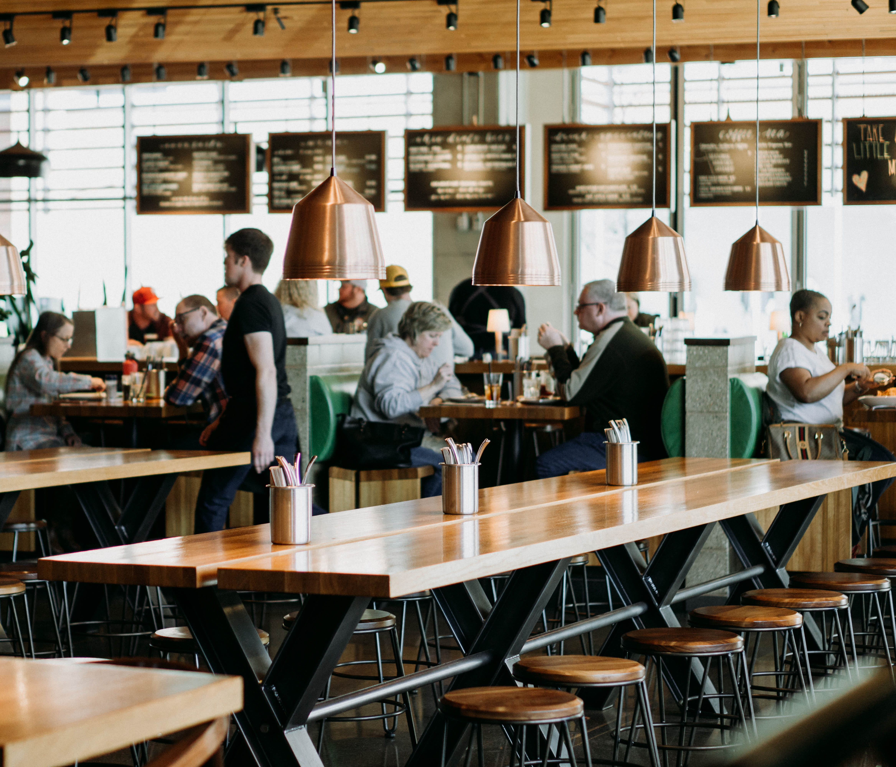
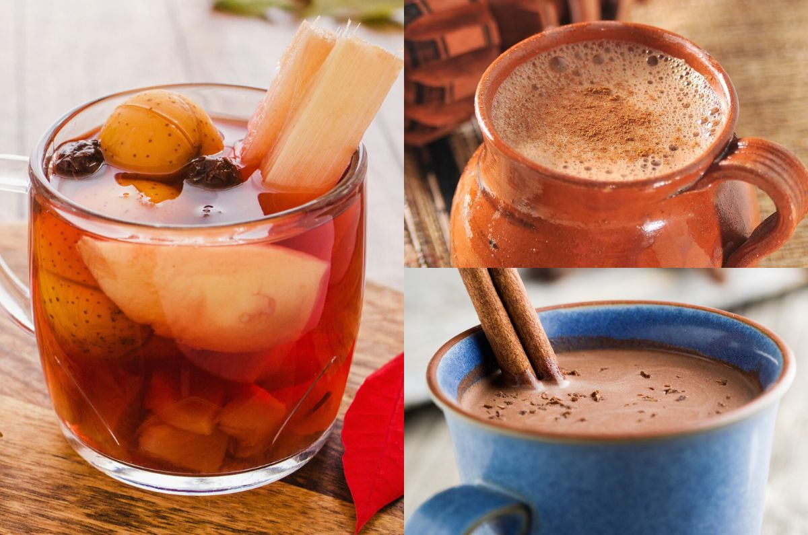

¿Por qué elegirnos?

Café Gourmet
Utilizamos granos de la más alta calidad, seleccionados de los mejores cafetales del mundo.

Ambiente Acogedor
Nuestro espacio está diseñado para que disfrutes de un momento de paz y relax.

Snacks Deliciosos
Acompaña tu café con nuestra variedad de postres y bocadillos artesanales.